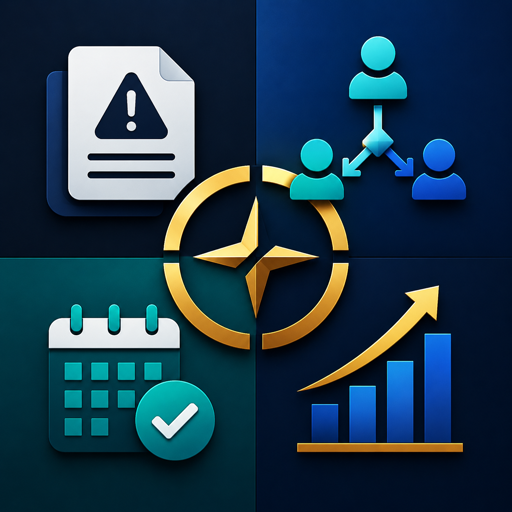

Create local reports with severity, owner, site, notes, and response status.

Operations workspaceQUILAN MARIUS RENE GABRIEL
A focused Android app for reporting incidents, assigning resources, scheduling interviews, and preparing payroll reports without accounts or cloud services.
Daily operations, kept local
The app is built for supervisors and administrative teams that need a simple private workspace during the workday. Each area is tuned for quick entry, visible ownership, and practical follow-up.
Reserve teams, rooms, review blocks, or equipment against operational priorities.
Track candidate slots, roles, stages, and interviewer owners in one schedule.
Capture period totals, department hours, variances, and approval readiness.
No accounts. No network service.
Records are stored on the Android device using local app storage. The app does not collect analytics, use advertising identifiers, or sync information to a server.
Offline record keeping
No Android permissions requested
Clear local data controls